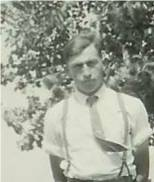
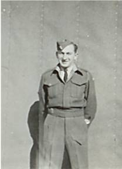
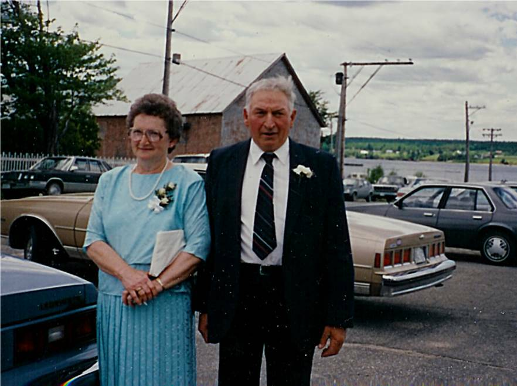

The Family Chronicle
No. 110 December 31,2005
____________________________________________________________________

Norman in front of apple tree in front yard
Norman Peters Glendenning was born on New Year’s Eve, 1925, however, when the birth was registered, it was given as December 31, 1926. Grandmother Glendenning was a Peters hence his second name. According to Lillian, Mum and Dad had difficulty deciding between the names Norman and Robert.
Norman attended the Little Branch School, classes in the Anglican Church in Bay du Vin and the Miramichi Rural High School. Before school bus service was established, Norm used to take a horse to Bay du Vin, and later Bayside, picking up other students along the way. The horse was stabled for the day in either Goymer Williston’s or
Harrison Smith’s barn.
At age 18, he enlisted in the army and found himself in the RCEME being sent first to Camp Utopia outside Saint John, New Brunswick and later to Woodstock, Ontario and Longueil, Quebec.
Norm was a good skater and a good dancer, and usually took me along when I first started going to dances in 1946. I also remember working with Norm at the hay; in the woods on cold and snowy Saturdays; butchering and peddling meat; shearing and dipping sheep and whatever else needed to be done. I know that I’ve already told the story of Norm bringing home several sheep in the back of the old Model A.
Norm taught me to drive. Once, I backed out of the barn ok but in turning to clear the hay press, I went too far and ran into the house. Fortunately, I did not do much damage.
Among Norm’s stories is one about Wallace MacDonald throwing a peavey at him and Edwin Adams, trips on icy roads up river with Mr. Harper to tend to a sick horse and the first time he drove a vehicle with airbrakes.
Norman married Jean Watling from Point Aux Carr and they had five children, Eileen, Alton, Judy, Loisanne

Norman while in army
and Eric. Alton and Eric now operate the farm although Norm continues to “supervise” and run errands; most every day he makes a trip to Miramichi City. Branchview, the Glendenning farm, is the largest farm east of Miramichi and one of the largest in the Miramichi area. Branchview has been the recipient of a number of awards.
Norman and Jean always welcome family to the old family home providing a place at the table for children, siblings, grandchildren, nephews and nieces alike. He always tells visiting children where the kittens were and offers to give them one to take home. Many young people of the community earned some money and learned important work habits while working on the farm with Norman and the “boys”.
Norm’s early years were filled with long evenings of farm chores on top of full days driving truck for Alfred MacDonald or with John pressing hay.
Norman and Jean are active in their community and are members of St. Paul’s Presbyterian Church where Norm is a Trustee. For a number of years Norman served as a trustee of the Black River Community Hall including during a major renovation in the 1960’s and reconstruction in the 1970’’s; was a director of Agricultural Society #103 and was a Director of the Northumberland Cooperative Dairy. He participates in local political meetings.
Their home and their camp are the scene of family gatherings especially on holiday weekends. Although not one to travel, in “retirement” he takes time to visit neighbours and friends around Black River.

Norman and Jean taken in 1988
The Chronicle is an occasional newsletter published by Don Glendenning and posted on the family website. It is intended to share information about my family, community and the times in which I grew up. While every effort is made to be accurate, errors are likely to occur. Comments, enquiries and information may be sent to 62 Queen Elizabeth Drive, Charlottetown, PEI, C1A 3A9. Tel:902 892 5859. Email: dglende@auracom.com Web: www.glendenning.net